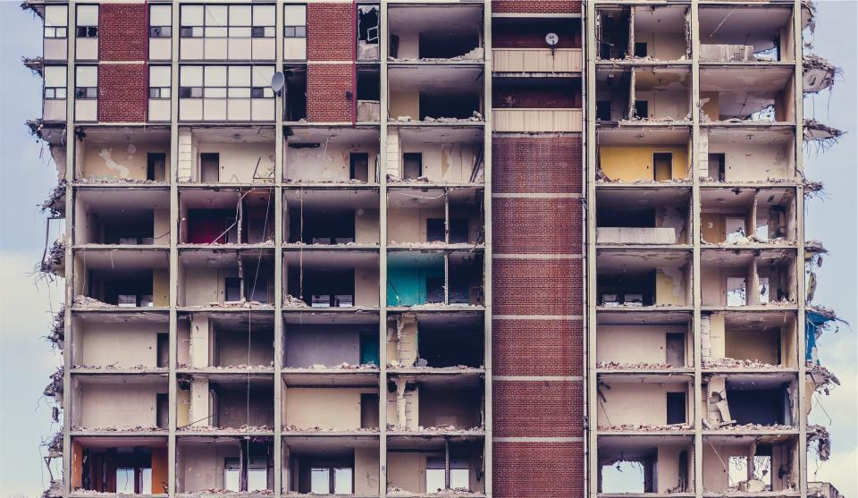

Varje skada dokumenterad från första minut
Tekniker fotograferar och mäter fukt i appen redan vid ankomst, och försäkringsbolaget ser samma underlag som vi. Det gör att vi river mindre, torkar rätt och att ärendet kan stängas snabbare.
Snabbhet och spårbarhet
Varje skada dokumenterad från första minut
Tekniker fotograferar och mäter fukt i appen redan vid ankomst, och försäkringsbolaget ser samma underlag som vi. Det gör att vi river mindre, torkar rätt och att ärendet kan stängas snabbare.
- < 2 htill plats i hela Skåne
- 48 htill skadeutredning hos försäkringsbolaget
- 18 av 31jourbilar är eldrivna

Trygghet
Behörigheter för fukt, asbest och brand
- Diplomerade fuktsakkunnigaFyra projektledare är diplomerade fuktsakkunniga enligt RISE.
- AsbesttillståndArbetsmiljöverkets tillstånd för rivning av asbesthaltigt material.
- ISO 9001 och 14001Certifierat ledningssystem för kvalitet och miljö sedan 2017.
- Heta arbetenAlla tekniker har certifikat för heta arbeten från Brandskyddsföreningen.

Hantverkarna
Jobba när det verkligen behövs
Vi söker tekniker och jourledare som vill göra skillnad för folk som har haft en riktigt dålig dag. Jouren är schemalagd i veckor, med ersättning även när det är lugnt.
Den som kör natten får alltid sova ut – nästa dag börjar ingen före tio.